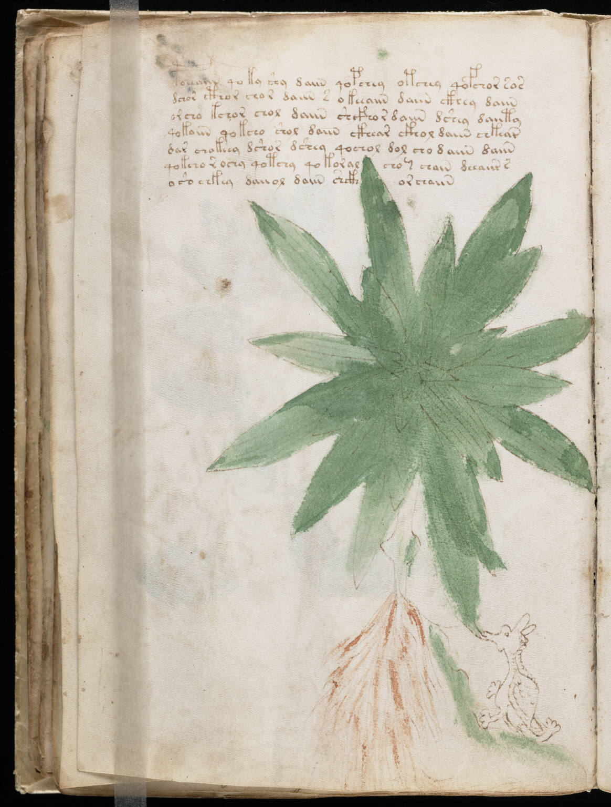

f25v
1poeeaiin qoky shy daiin qopchey otchey qofchor sos2dchor cthor chor daiin s okeeaiin daiin ckhey daiin3orcho kchor chol daiin shcfhor daiin dshey daiity4qokaiin qokcho shol daiin ckhear ckhol daiin chkear5dar chakeey dshor dshey qochol dol cho daiin daiin6qokcho r ochy qotchy qokoral chochain deeaiir s7oso chkey daiiol daiin shckhyorchaiin
